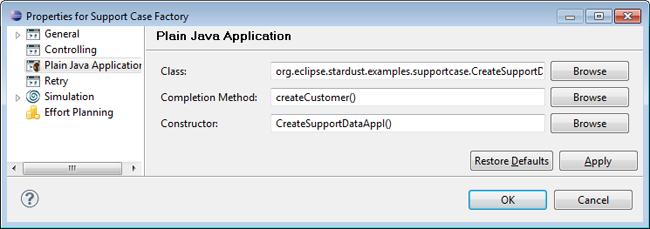
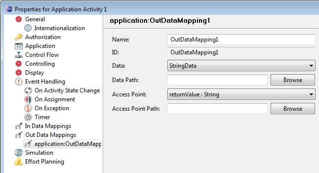
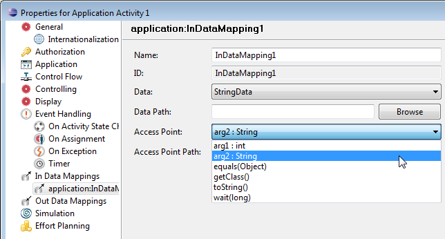
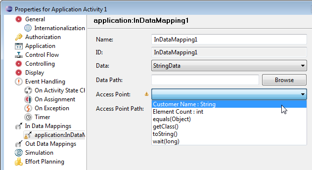
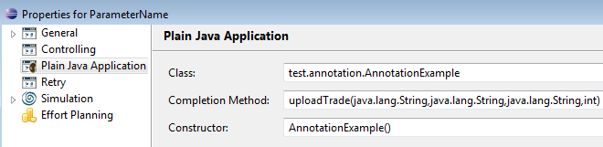
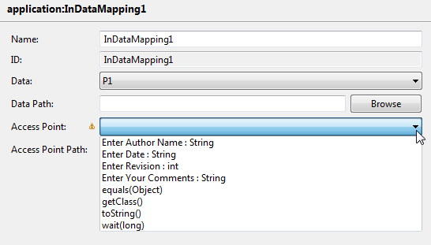
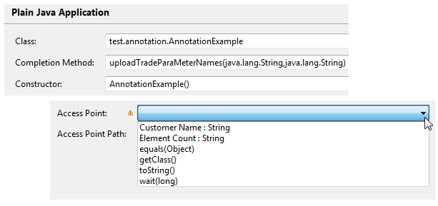
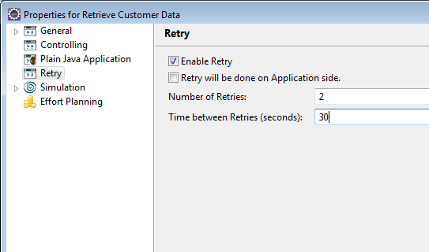

Plain Java applications allow to instantiate any Java class with at least one public constructor and execute a method on it. To achieve this, at modeling time you have to specify
These settings are accessed in Plain Java application types in the Process Workbench.
To specify a plain Java application in the Process Workbench:
Please refer to chapter Specifying Applications for general questions on working with applications in the Process Workbench.

Figure: Specifying a Plain Java Application
Detailed information on integrating Java applications can be found in the System Integration part.
The return value of the completion method, if any, will be exposed as an OUT access point returnValue : <type>.

Figure: Return Value Access Point
The constructor and completion method parameters will be exposed by the arguments of the methods in the format <argument> : <type>.
For example using the following completion method with parameters arg1 and arg2:
public class TestAppl
{
public TestAppl()
{
}
public void notifyCustomer(int arg1, String arg2)
{
}
}
would result in the provided access points arg1 : int and arg2 : String.

Figure: Access Points for completion method
When connecting a data to an application activity, the data mapping is created automatically. Please refer to the section Automatic Completion of Data Mappings of the chapter Specifying Data Mappings for detailed information on the preset of parameters for automatic completed data mappings.
Stardust provides the following two annotations that can be used to retrieve access points via parameter names:
@ParameterNames ({@ParameterName("count"), @ParameterName("name"), ...})
public int method(int arg1, String arg2);
For example, if you set the following annotations for your completion method:
import org.eclipse.stardust.common.annotations.ParameterName;
import org.eclipse.stardust.common.annotations.ParameterNames;
public class TestAppl
{
public TestAppl()
{
}
@ParameterNames({@ParameterName("Element Count"), @ParameterName("Customer Name")})
public void notifyCustomer(int arg1, String arg2)
{
}
}
instead of the arguments, you see the annotation settings for ParameterNames in the list of access points:

Figure: Access Points with Annotation Usage
For an applications that you like to import in the Portal Modeling perspective, you can also use the @ParameterName in the parameter list directly, as in the following example:
import org.eclipse.stardust.common.annotations.ParameterName;
public class TestAppl
{
public TestAppl()
{
}
public void notifyCustomer(@ParameterName("Element Count") int arg1, @ParameterName("Customer Name") String arg2)
{
}
}
Instead of importing the predefined classes org.eclipse.stardust.common.annotations.ParameterName and org.eclipse.stardust.common.annotations.ParameterNames, you have the option to create your own custom classes and import them. These classes should follow the pattern below:
import java.lang.annotation.ElementType;
import java.lang.annotation.Retention;
import java.lang.annotation.RetentionPolicy;
import java.lang.annotation.Target;
@Retention(RetentionPolicy.RUNTIME)
@Target(ElementType.PARAMETER)
public @interface ParameterName
{
String value();
}
@Retention(RetentionPolicy.RUNTIME)
@Target(ElementType.METHOD)
public @interface ParameterNames
{
ParameterName[] value();
}
The following example class imports the interfaces from a class CustomAnnotations, which follows the pattern mentioned above:
import test.annotation.CustomAnnotations.ParameterName;
import test.annotation.CustomAnnotations.ParameterNames;
public class AnnotationExample {
public String uploadTrade(@ParameterName(value = "Enter Author Name") String tradeAuthort, @ParameterName(value = "Enter Your Comments")String tradeComments,
@ParameterName(value = "Enter Date")String tradeDate, @ParameterName(value = "Enter Revision")int tradeRevision) {
return "From Upload Trade Method";
}
@ParameterNames(value = {@ParameterName("Element Count"), @ParameterName("Customer Name")})
public String uploadTradeParaMeterNames(String count,
String name){
return "Returned From Upload Trade Parameters Names Method";
}
}
You can set the uploadTrade as completion method for a Plain Java Application.

Figure: Plain Java Application using Annotation Classes
Then the following access points using the custom annotations are provided:

Figure: Access Points provided with custom Annotation Usage
Or, when using uploadTradeParaMeterNames as completion method for a Plain Java Application, the following access points are provided:

Figure: Access Points provided with custom ParameterNames Usage
The configurable retry mechanism provides the facility to retry an operation in case the target service is temporarily unavailable.
For more information, please refer to Retry Mechanism of Non-interactive Applications section of the Applications Concept chapter.
If you enable the Retry functionality for a Plain Java application, you have to define the number of retries and the time between retries in seconds. Note that the maximum number of retries is 10 and the maximum time between retries is restricted to 60 seconds. Additionally you can enable the retry to be performed on application side and thus disable a retry on engine side.

An application with an enabled retry functionality will retry for the defined number of times with a pause of the defined number of seconds, until it succeeds. If the application still fails after the defined number or time, it will no longer retry.